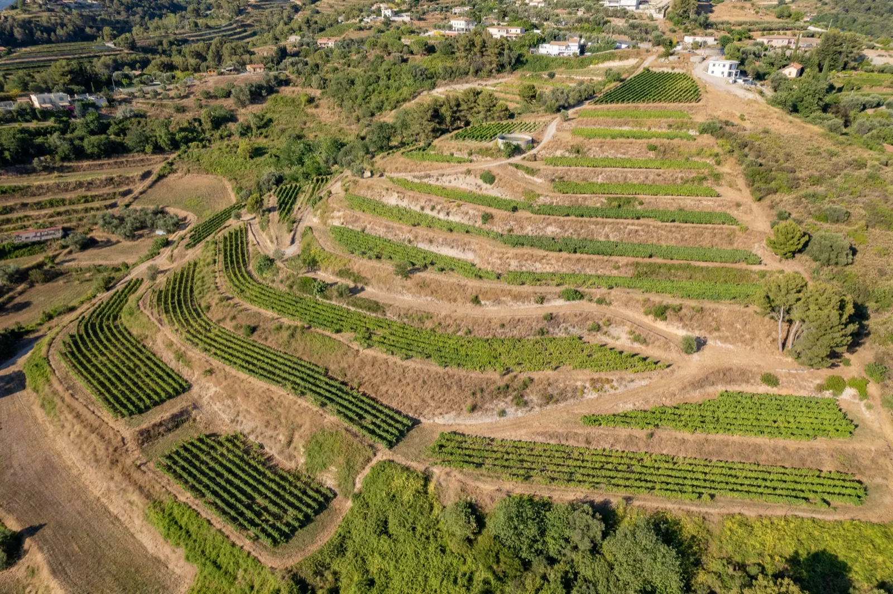
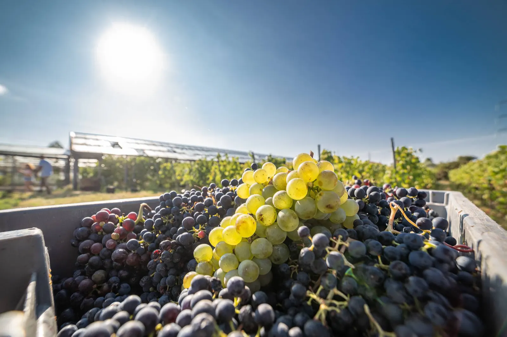
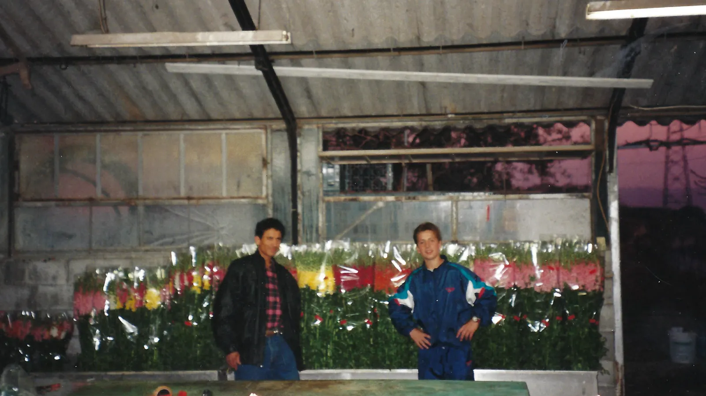
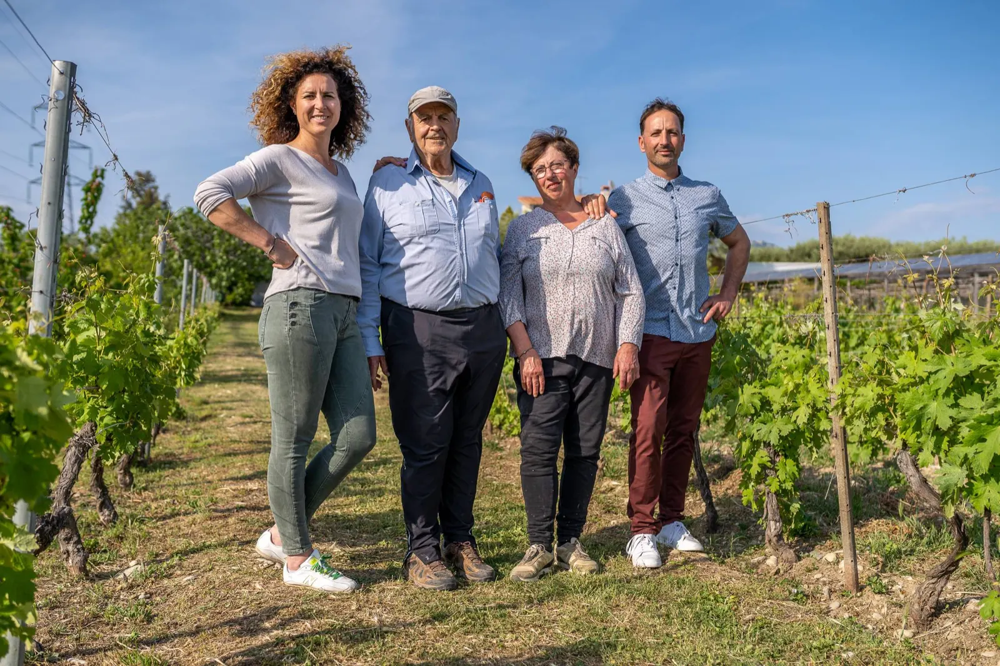
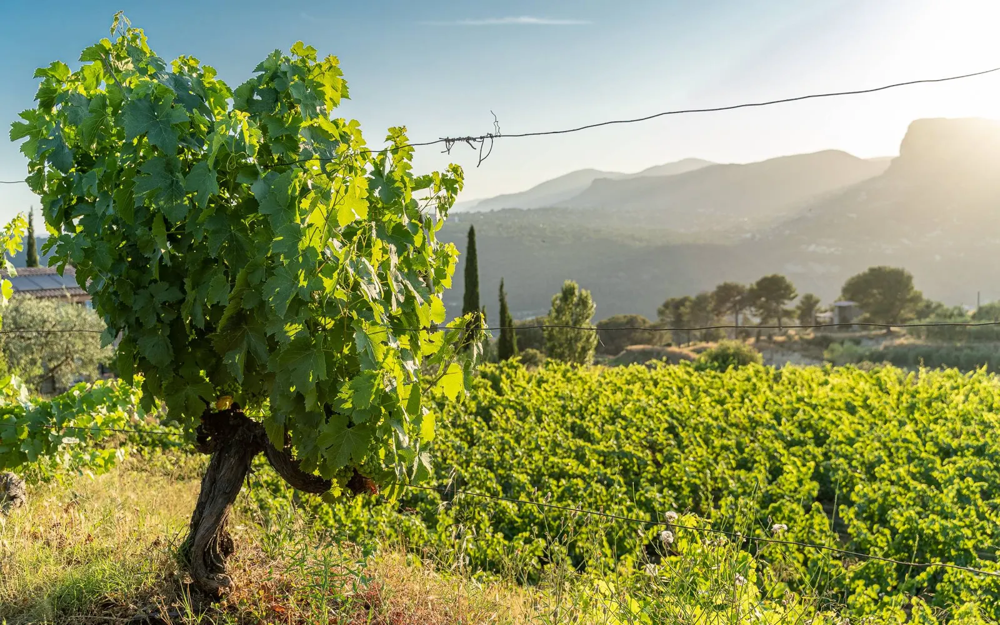
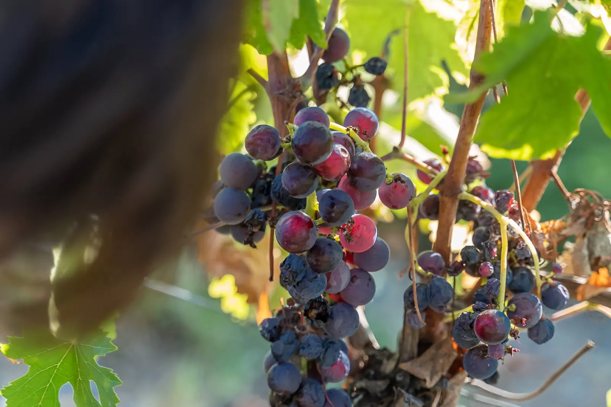
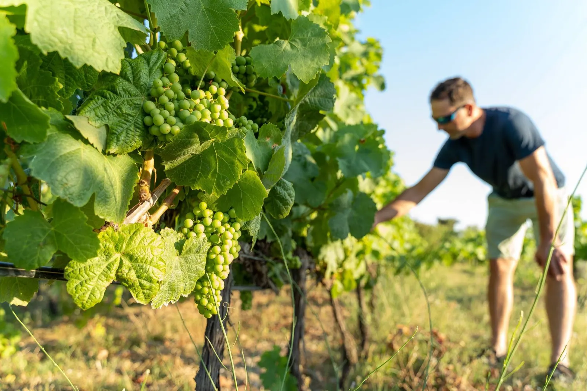
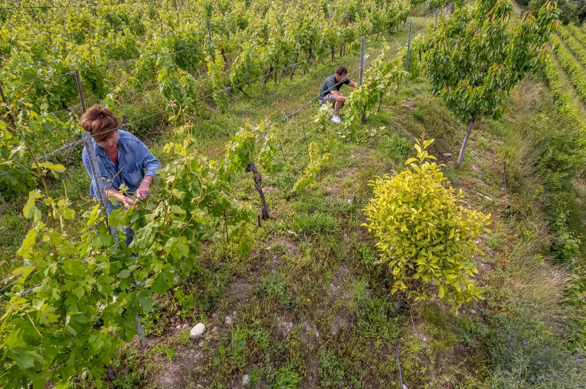
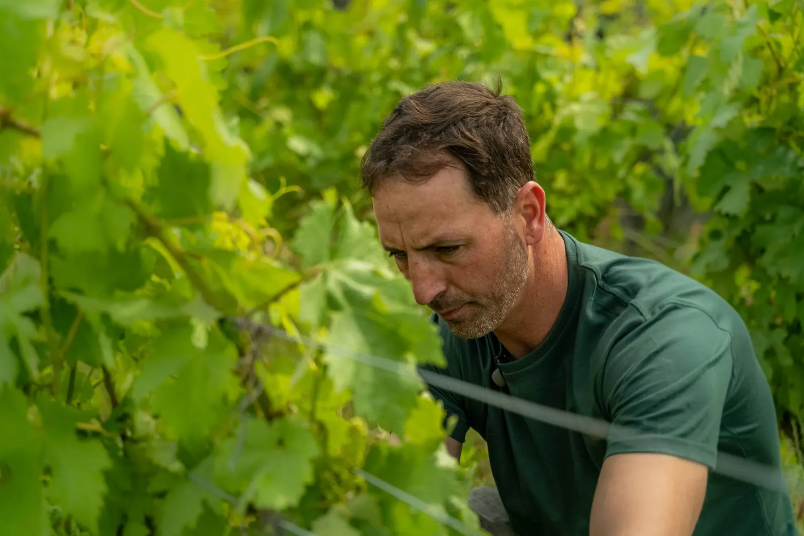
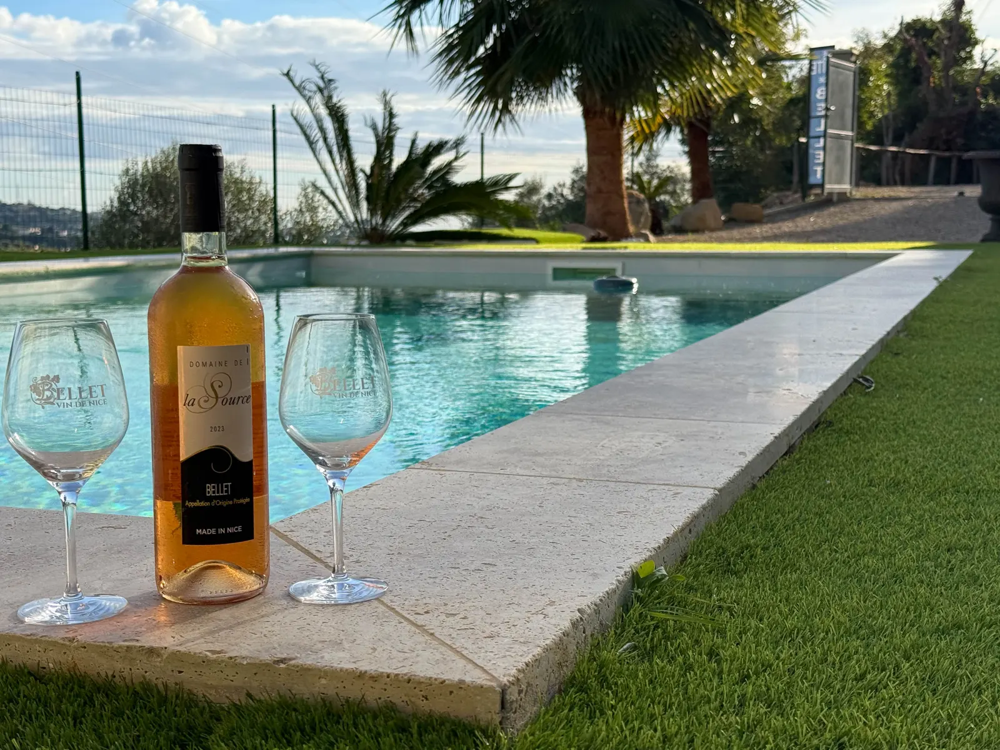

Entre mer et montagne, des vins produits avec passion.
Un des plus petits vignobles de France, niché sur les collines de Nice, à 10 minutes de la Baie des Anges. Sept hectares de vignes en bio, cultivés par la famille Dalmasso au cœur de l’appellation Bellet.


- 1941Bellet est une AOC depuis 1941
- 7 hectaresde vignes sur la colline de Saquier
- 3 générationsde la famille Dalmasso
- Biotous les vins certifiés par Ecocert depuis 2007
- 10 h à 18 hdégustation du lundi au samedi
Les serres laissent place au vignoble.
Aux XIXe et XXe siècles, Nice était réputée pour ses œillets, ses roses, ses cyclamens et ses fleurs d’oranger. En 1960, le domaine n’existe pas encore, mais la propriété est déjà celle de la famille Dalmasso.
Jacques et Hélène se prennent de passion pour la vigne, ses cépages et la vinification : l’horticulture laisse place à la viticulture. Quelques serres subsistent encore, souvenir d’une époque liée à la vie niçoise. Carine et Éric, qui gambadaient enfants entre les œillets de leur grand-père, rejoignent ensuite leurs parents au domaine.


- 1960La propriété appartient déjà à la famille Dalmasso.
- 2007Carine et Éric font certifier tous les vins en bio par Ecocert.
- 7 haQuelques hectares par ici, quelques ares par là : les vignes prennent de l’ampleur sur la colline de Saquier.

« Notre terroir est petit mais ses offrandes sont immenses. »
Les parcelles sont réparties sur le versant le plus à l’ouest de l’appellation Bellet : un large ensoleillement, un climat tempéré, la Méditerranée pour horizon au sud et le Mercantour au nord.
Nos vins, rares et de caractère
Des cépages uniques : le Rolle pour le blanc, le Braquet pour le rosé, la Folle Noire et le Grenache pour le rouge. Tous les vins sont certifiés bio, et certains travaux à la vigne et en cave suivent les cycles lunaires.
- Rouge, Folle Noire
Fuella Nera
Rubis pourpre sombre, un caractère sauvage et sanguin, des nuances de fruit noir, de cerise marasque et d’épices douces, dans la trame d’un élevage sage.
- Bulles
So Niiice !
Une méthode traditionnelle au nez net et fruité, aux arômes de pêche, avec de légères notes levuriennes qui lui donnent un caractère de pain frais.
- Blanc, 100 % Rolle
Le grand Rolle
Jaune citron pâle aux reflets or blanc, un nez délicat au voile toasté et d’amande, puis des notes de pêche et de citron à l’aération.
- Rosé
Braquet
L’expression d’un cépage emblématique de Bellet, cultivé exclusivement sur quelques hectares de l’appellation.




Venez nous rencontrer au domaine.
Une visite guidée et commentée avec un membre de la famille Dalmasso, au milieu des vignes et dans la cave. Ou une flânerie dans les vignes, et la dégustation de nos crus à l’ombre du patio.
Formule Découverte
25 €Par personne, pour 3 vins. Une promenade dans les vignes au-dessus de la plaine du Var, et le coucher de soleil sur le Baou de Saint-Jeannet, un verre à la main.
Repas et apéros au domaine : spécialités niçoises, viandes au barbecue, socca au four à bois, avec nos vins de Bellet et notre cuvée effervescente.

Une villa entre mer et vignes
Le Gîte de Bellet jouxte le domaine. Les propriétaires vous y accueillent pour une visite guidée au milieu des vignes et une dégustation commentée de leurs vins de Bellet.